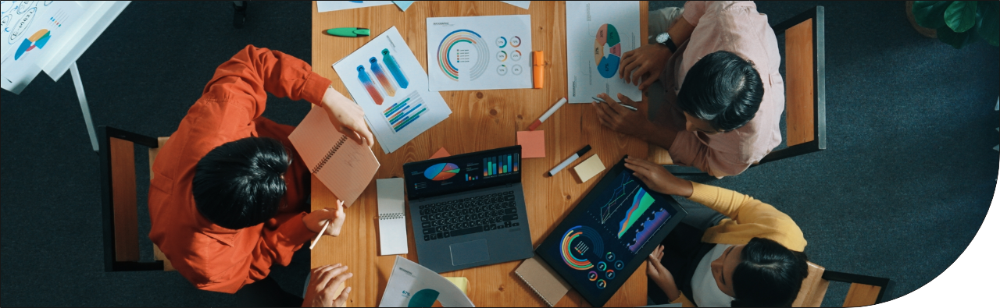

job finder
おしごと図鑑
エンターテインメントに関わる職種はさまざまです。ご自身の強みを活かして活躍できるフィールドが広く用意されています。ぜひ、興味のあるおしごとを探してみてください。
プロジェクトマネジメント・調整系職種
複数の関係者と連携しながらプロジェクト全体を管理・進行します。
歌舞伎製作部
（歌舞伎製作室／芸文室）
演劇本部
歌舞伎公演のスケジュールや予算の策定、配役決定、台本作成から舞台製作までの一連の流れを担当します。スタッフや俳優との折衝、関係会社への発注など、幅広い業務に関わりながら、公演を成功に導きます。 芸文室は、脚本の執筆・改訂、上演資料の整理のほか、子供歌舞伎スクールの運営にも関わっています。
演劇製作部
（演劇製作室）
演劇本部
ストレートプレイやミュージカル、レビューやコンサートなど、歌舞伎以外の演劇作品の企画からキャスト編成、稽古日程の決定、予算組みまでを一貫して担当します。稽古の立ち会いや舞台セットの準備にも関わり、作品をつくり上げていくプロセス全体を管理します。
映像調整部
（邦画調整室／業務室）
映像本部
映像作品の製作から公開、二次利用までの一連の流れを、主にビジネス面からサポートする部門です。製作委員会の組成や調整を担い、社内の関連部署や委員会との橋渡し役として、作品にとって必要な各種調整を行っています。作品収支を一気通貫でフォローするため、映画ビジネスにおける川上から川下まで、幅広く関わります。
営業・運営系職種
作品とお客様をつなぐ営業・運営を担当し、サービスを提供する現場を支える役割を担います。
直営劇場・
（歌舞伎座／新橋演舞場／大阪松竹座／京都南座）
チケット事業室
演劇本部
演劇作品の快適な観劇環境を提供するため、劇場の運営とチケットシステムの管理を行います。各劇場には、運営・営業・宣伝などを担うセクションがあり、お客様へのサービス向上、思い出に残る劇場体験のためにさまざまな施策を展開します。
演劇営業部
（演劇公演室／演劇宣伝室）
演劇営業部
直営劇場以外で行う松竹主催の公演や地方巡業公演の企画運営を担当します。また、筋書（プログラム）の作成やチラシポスターの製作、メディア露出やSNS運用を通じて、作品の魅力を広く発信します。社内外多くの関係者と連携して舞台公演を支えています。
映画営業部
（関東営業室／関西営業室／ODS事業室／シアターマーケティング室／業務室）
映像本部
松竹配給作品の全国上映に向けて、映画館との交渉や上映スケジュールの調整を行います。お客様に映画を届けるために、前売り券の販売や宣伝素材の手配など上映前後の業務も担い、興行収入の最大化を目指します。
企画・クリエイティブ系職種
時代のニーズをとらえながら新しい作品を生み出し、発想力と企画力でプロジェクトを支えます。
映像企画部
（映画企画室／テレビ企画室／映像コンテンツ室／脚本開発室／演出室／業務室）
映像本部
企画プロデューサーとして、映画やテレビドラマの企画立案から撮影スケジュールの管理、予算調整まで作品の全体進行を担当します。企画から完成までのプロセスを管理し、作品を世に送り出すための戦略を担う重要な役割です。近年では、3面スクリーン作品の開発など、多様なジャンルの作品を手掛けています。
アニメ事業部
（アニメ企画室／宣伝企画室／マーケティング推進室／アニメ調整室）
映像本部
テレビアニメや劇場版アニメの製作・調達・宣伝を行う、アニメに特化した部門です。国内外に向けたコンテンツの制作やプロモーションを行い、アニメファン層の拡大を図ります。グローバル市場も巻き込みながら、アニメ業界全体をリードする役割を担います。
権利管理・ライツビジネス系職種
松竹が手掛けてきた作品という資産を多角的に展開し、収益の最大化を目指します。
演劇ライツ部
（演劇配信事業室／ライツビジネス室／筋書編集室）
演劇営業部
シネマ歌舞伎や配信事業、演劇関連グッズの監修を行い、演劇作品の新たな価値を創出します。映画館での上映やオンライン配信を通じ、より多くの人々に演劇を楽しんでもらうための施策を推進することで、演劇ビジネスの収益最大化に貢献します。
メディア事業部
（商品事業室／宣伝販促室／配信営業室／国内版権室／知財事業室／業務室）
映像本部
映像作品の配信や権利運用、パッケージ販売など、ライツビジネス全般を担当します。松竹が持つ知的財産の価値を高めながら、IPビジネスの整備・推進も行っています。松竹作品を広く展開し、劇場公開だけではない作品の収益最大化に貢献します。
映像アーカイブ室
映像本部
松竹の映像作品やフィルムを保存・管理し、デジタル化を推進する部門です。松竹映像センターと協業で４Ｋデジタル修復などを実施し、映像素材の資産価値を向上させています。歴史的価値のある映像資料を保存しながら、未来のためにデジタルライブラリーの整備を行っています。
事業推進部
（出版企画室／商品企画室／業務推進室／EC推進室）
事業開発本部
松竹グループの既存事業をさらに深掘りし、新たな事業展開を推進する部門です。出版や商品開発、キャラクタービジネスやライセンスビジネスを担当し、国内外で松竹ブランドを広めるための事業戦略を策定・実行します。
サポート・バックオフィス系職種
現場やグループ全体の運営をサポートし、企業活動の根幹を支えるバックオフィス業務に携わります。
演劇経理部
（本部業務室／興行部門会計室）
演劇本部
各部門の取引計上や予算達成状況を把握し、演劇作品の収支管理を行います。正確な数値管理が求められると同時に、スピード感を持って対応することも重要です。演劇本部の各部署と密に連携しながら、作品の成立から終了までを経理の側面から支えています。
経理部・財務部
（主計室／経理室／財務会計室）
管理本部
松竹グループ全体の収支管理を行い、各事業部の財務基盤を支える部門です。予算編成や決算業務、資金調達などを担当し、グループ全体の財務健全性を維持します。日々数字と向き合い、データをもとにビジネスに貢献する分析力が求められます。
総務部
（総務室／社史編纂室／関西総務室）
管理本部
松竹グループ全体の運営を支える部門です。株主総会の運営をはじめ、株主や一般のお客さまからのお問い合わせの対応、各部署からの稟議や申請受付など、会社の運営に必要不可欠な業務を一手に担っています。テロ対策やオフィス環境の整備・改善など、社員を含むステークホルダーすべてを支えています。
法務室
管理本部
法的視点から企業活動をサポートする部門です。契約書の作成・相談や商標権をはじめとした知的財産権の取得管理など、各部門の社員と連携しながら事業を推進します。松竹グループ社員に対する法的意識の啓発活動も行い、法律の観点から攻めと守りの両輪でビジネスを成功に導く部署です。

戦略・マーケティング系職種
事業やプロジェクトを成功に導くためのマーケティングや戦略立案に取り組みます。
演劇統括部
（演劇戦略室／演劇広報室／演劇総務室）
演劇本部
歌舞伎をはじめとした演劇作品の情報を、国内外に届ける広報の役割を担います。WEBサイト運営やSNSなどのデジタルメディアの活用により、歌舞伎の魅力を発信し、ファン層の拡大を図ります。演劇文化を広めるための戦略立案から実行まで、幅広い業務に携わります。
映像統括部
（映像戦略室／業務推進室）
映像本部
映像ビジネス全体の戦略を企画し、統括する部門です。常にマーケットと向き合い、各種調査の設計・実施、結果に対する分析を行います。市場のニーズを把握し、映像作品を最適な形で世の中に提供するために、企画や宣伝といった部署のサポートを行います。
映画宣伝部
（宣伝企画室／宣伝推進室／業務室）
映像本部
映画作品の魅力を届けるため、作品ごとに合わせた宣伝施策を企画・実行します。社内外の関係者と連携しながら、予告編やポスター制作、メディア広告の展開、完成披露試写会等のイベントの開催など、ターゲットの関心を引き付けるためのさまざまな施策を仕掛けています。
不動産・資産管理系職種
松竹が保有する不動産資産を管理し、長期的な資産価値の最大化を目標としています。
不動産戦略部
（開発室／業務室）
不動産本部
不動産事業における持続的な成長を維持するために、有効な戦略を立てる部門です。全国各地に保有する不動産資産を有効活用し、情報収集や調査・マーケティング、中長期的な戦略の立案を行います。 新規開発案件の企画から事業計画、将来に向けた街づくりに取り組み、本部全体の業務企画や組織運営、賃貸事業における収支の管理や予算計画なども行います。
不動産運営部
（営業室／施設室／関西運営室）
不動産本部
全国各地に保有する劇場・映画館・オフィス・店舗などの不動産の管理運営を行っています。賃貸物件におけるテナント誘致や地域との関係構築に取り組み、保有不動産の適切な運営とテナント企業との良好な関係構築によって収益を確保する重要な役割を担っています。
価値創造推進室
不動産本部
中長期的な視点で保有不動産の価値を向上させるため、さまざまな企画立案から実施運営を担う部門です。東銀座地域のエリアマネジメントをはじめとして、地域に根ざした文化発信拠点の創造を担い、他部門とも連携しながら松竹全体で推進するプロジェクトとなります。社内だけでなく、地域企業、町内会、行政組織とも一緒に街づくりを進めていきます。
人事・経営サポート系職種
人やビジネスの側面から企業全体の成長を支援し、働きやすい環境づくりを推進します。
人事部
（人事厚生室／人材開発室／人事戦略室／健康推進室／関西人事室）
管理本部
企業の最大の経営資源である「人」の管理を担う部門です。人材の採用、社内研修などによる育成、評価・配置、各種人事制度の設計・運用など、組織で人材を活性化させるためのさまざまな業務を行っています。社員全員が安心して働けるためのサポートを行い、人を起点として会社全体の成長を促進します。
経営企画部
（経営企画室／グループ企画室／広報室／おもてなし開発室／業務企画室／システム室）
管理本部
経営計画や戦略を立案し、松竹グループ全体の方向性を見定める部門です。リスク管理や市場分析、広報業務を通じて、グループの成長を支えるための施策を推進します。社長直下の組織となり、経営全体を統括する重要な役割です。
秘書室・内部監査室
管理本部
松竹グループとしての企業方針を把握し、あらゆる面から会社をサポートする部門です。秘書室は、会長・社長をはじめとした役員と密にコミュニケーションを取りながら、情報収集、および経営のサポートを行います。内部監査室は、松竹グループ内の業務改善や効率化の提案を行い各社をサポートするとともに、不正・事故などによる経済的・社会的損失の未然防止を目指しています。
事業統括部
（事業統括室）
事業開発本部
新規事業領域に取り組む各部署が円滑にまわるよう、連携しながらサポートするハブとなる部門です。既存事業の深掘りに加えて、新しい事業領域開拓における計数管理や今後の戦略立案など、本部内一気通貫で統括していく役割を担っています。
グローバル・新規事業系職種
国際的な視点で事業展開を行い、新しい技術やアイデアを取り入れて事業を推進します。
海外事業部
（グローバルコンテンツ室／グローバル営業室／業務室）
映像本部
海外作品の調達や松竹作品の海外セールスを担うグローバル部門です。世界各地で行われる主要映画祭や映画マーケットに参加して商談・交渉を行います。買い付けた作品については、宣伝からライツビジネスまで広く携わります。
イノベーション推進部
（イノベーション戦略室／ゲーム事業室／ライブエンタテインメント事業室／イベント事業室）
事業開発本部
松竹グループの新規事業や技術革新を推進する部門です。新しい技術を活用した映像制作やコンテンツの創造、イベント企画なども行い、オープンイノベーションを促進します。今後持続可能な新規ビジネスの創造と展開を多彩な視点で推進し、当社の新しい事業領域を開拓していきます。